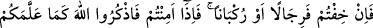
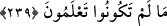

delîldir. Çünkü Rasûlullah’ın Ahzâb günü buyurduğu orta namazın, ikindi namazından
başka bir şey olduğunu bunun cuma günündeki icâbet ânına benzediğini söyleyenler de
vardır.
Hz. Âişe (r.anhâ) vâlidemizin Rasûl-i Ekrem (s.a.)’den rivâyet ettiği: “Namazları,
orta namazı ve ikindi namazını koruyun” hadîs-i şerîfi, orta namazın, ikindi
namazından başka olduğuna delâlet etmez mi? denirse” deriz ki: Bu hadis-i şerîfteki
“vüstâ” kelimesinin lakab, “Asr” kelimesinin ise isim olması muhtemeldir. Rasûlullah
(s.a.) Efendimiz, bu hadîslerinde, ikindi namazını hem ismiyle hem de lakabıyla
zikretmiştir. İbn Melek’in Şerhu’l-meşârik isimli eserinde bu açıklama vardır.
“Gönülden bağlılık ve saygı ile Allah’ın huzûruna durun!”
“Kunût”un bir anlamı da zikir demektir. Buna göre âyetin mânâsı: “Allah’ı zikrederek
O’nun huzûruna durun” demek olur. Rivâyet edilmiştir ki, Ashâb-ı kirâmdan biri
namaza durduğunda bitirinceye kadar gözünü sağa sola kaydırmaktan, çakıl taşlarıyla
oynamaktan ve içinden dünyâ işlerini geçirmekten son derece sakınır, bu konuda
Allah’dan korkardı.
239. Eğer (herhangi bir şeyden) korkarsanız (namazlarınızı) yürüyerek yahut
binmiş olarak (kılın). Güvene kavuştuğunuz zaman, siz bilmezken Allah’ın size
öğrettiği şekilde O’nu anın (namaz kılın).
“Ricâl”; “râcil” kelimesinin çoğulu olup yürüyenler; “rükbân” ise “râkib”
kelimesinin çoğulu olup “biniciler” mânâsına gelmektedir. Düşmandan veya herhangi
bir şeyden korku içinde olunduğu zaman namazlar yürüyerek veya binek üzerinde
kılınabilir. Ebû Hanîfe’nin görüşüne göre ise, yürüme ve savaşma hâlinde durmak
mümkün olmayınca namaz kılınamaz. Ancak durmak mümkün olunca, durarak namaz
kılınır. “Şayet korkarsanız...” şeklinde başlayan âyet buna delâlet etmektedir.
Emniyete erip korku zâil olunca Allah’ın size öğrettiği şekilde, emniyette iken
kılınması gereken bir tarzda namazı kılınız. Burada namaz, “zikir” olarak tâbir
edilmiştir. Çünkü zikir, namazın rükünlerinden en büyüğüdür. Âyetteki teşbîhten murâd,
edâ edilen namazın, Allah’ın öğrettiğine muvâfık olmasıdır. Bu ünvanla zikredilmesi
ise, belli bir nîmetin hatırlatılması içindir. Veya Allah’a, İslâm’ın hüküm ve
prensiplerinden size öğrettiklerine -ki korku ve emniyet hâlinde nasıl namaz kılınacağı
meselesi de bu hükümlerden biridir- karşılık olarak şükrediniz.
Şunu iyi bil ki: Namaz, ziyâfet makamındadır. Cenâb-ı Allah bu ziyâfeti ehl-i tevhid
kullarına her gün beş defa hazırlamıştır. Nasıl ki ziyâfette çeşit çeşit yiyecekler varsa ve
her yiyeceğin ayrı bir lezzet ve rengi bulunursa, namazın da değişik rükün ve fiilleri ve